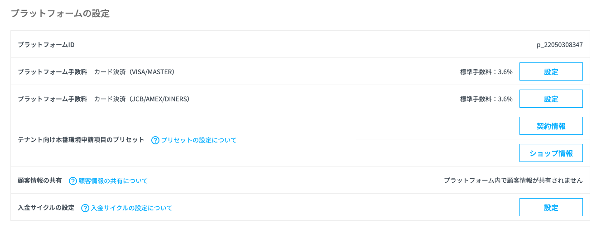
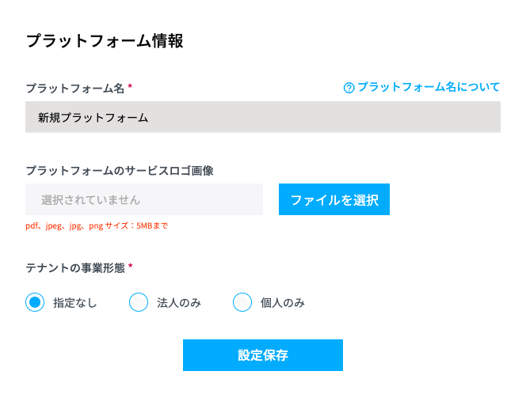
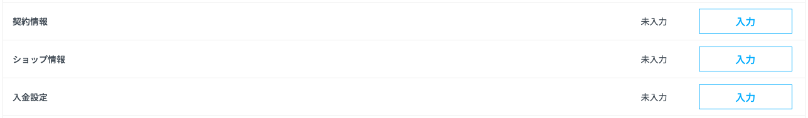

平台设置
可设置使用费率、租户商户申请时显示的信息，以及生产环境申请各字段的预填值。

默认平台使用费
在此设置今后新申请的租户商户的平台使用费率初始值。之后也可以单独修改某个租户商户的费率。
此设置仅影响之后申请的租户商户。已创建的租户商户请在“租户商户”标签页的“租户商户详情”中修改。
设置范围为 3.6%～50%，须按支付方式分别设置。
什么是平台使用费
销售款减去平台使用费后为租户商户的入账金额。平台使用费减去 fincode 手续费后为平台类型商户的入账金额。
销售款减去平台使用费后为租户商户的入账金额。平台使用费减去 fincode 手续费后为平台类型商户的入账金额。
平台信息及租户商户生产环境申请的填写说明
平台信息
可设置平台服务的标志图片和生产环境申请的补充说明，自定义租户商户邀请页面，帮助租户商户顺利办理生产环境申请。
设置“租户商户的经营主体类型”后，可将申请资格限定为指定类型的商户。


添加填写说明
可以为租户商户生产环境申请的各个字段添加说明，自定义生产环境申请页面。
如需让租户商户按一定规则填写，可使用此功能。如需强制使用特定值，请使用下文的“预设”功能。

预设租户商户的生产环境申请字段
可以事先指定并锁定租户商户生产环境申请中各项的填写内容。
请注意，租户商户无法修改已设为固定值的字段。
如需强制填写特定值，或尽量减少租户商户申请生产环境时的填写工作，可使用此功能。
共享客户信息
此处仅可查看客户信息共享设置。该设置只能在创建商户时选择，之后无法修改。